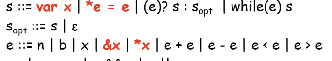

충남대학교 컴퓨터공학과 이성호 교수님의 "프로그래밍 언어 개론" 강의를 필기한 내용입니다.
다소 잘못된 내용과 구어적 표현 이 포함되어 있을 수 있습니다.
반복문의 구조

- 별거없다
MiniC에서의 반복문
- 일단 _while문만 지원하면 syntactic sugar를 이용해 do-while이나 for문을 지원할 수 있다

Concrete Syntax

- C언어와 동일한 concrete syntax를 따른다
Abstract syntax

- 하나의 expression과 statement list로 구성된다
Semantics

- conditional expression이 참일때와 거짓일때 두가지의 경우로 나눠서 정의한다
- 참일때 반복에 대한 의미가 안들어가있어서 좀 헷갈릴 수 있는데 마지막 while(e) s 부분이 재귀적으로 자기자신을 다시 호출한다는 의미로 받아들이면 된다
- 먼저 e가 참인지 보고, slist를 계산하여 스토어를 업데이트한 뒤, 그 스토어에서 다시 while루프를 호출해 다시 e를 확인하고 s를 실행하고 하는식으로 굴러간다 이거임
Pointer
- 어떤 언어가 pointer를 지원한다는 뜻은 그 언어가 Reference와 Dereference를 지원한다는 소리이다
- Reference : 어떤 변수의 메모리 주소를 열람하는 것 - C언어에서 &var를 의미함
- Dereference : 메모리 주소를 이용해 그 주소에 저장된 값을 열람하는 것 - C언어에서 *addr 를 의미함
MiniC에서의 Pointer
Concrete Syntax

- 원래 우리가 정의한 MiniC에서는 변수의 선언이 없었다 - 걍 변수명을 쓰면 새로 선언되거나 호출되거나 했었는데
- 이제는 var이라는 키워드를이용해 변수 선언을 하고
- id = expr을 하면 선언된 그 변수에 값이 들어가며
- expr = expr을 통해 주소에 저장된 값을 바꿔주는 것을 하게 됨
- 위의 세개는 전부 스토어가 바뀌므로 statement라고 할 수 있고

- &와 * 를 이용해 reference하거나 dereference하는 expression을 만들어준다 - 얘네는 스토어가 바뀌지 않으므로 expression이 되는 것
Abstract Syntax

- 위에서 추가해준대로 변수 선언과 주소에 저장된 값을 바꿔주는 statement
- 그리고 reference와 dereference를 해주는 expression 들이 추가가 된다
- 또한 변수에 값을 할당하는 것은 syntactic sugar로 처리할 수 있다
x = e; -> *&x = e;

- reference와 dereference, vardeclstmt는 변수 하나만을 필요로 하기 때문에 string하나로 구성이 되고
- storestmt는 expr의 결과를 주소로 하는 위치에 다음 expr의 결과를 할당할 것이므로 expr 두개의 튜플로 구성된다고 할 수 있다
Abstract Memory Model in MiniC

- 원래의 MiniC에서는 스토어에 [변수이름 → 값] 으로 저장이 되었지만
- 이제는 포인터를 지원하기 위해 중간에 주소의 개념을 추가하게 된다
- 즉, 스토어를 Env(환경)과 Mem(메모리)로 니누어
- Env(환경)에는 [변수이름 → 주소] 로 매핑되게 하고
- Mem(메모리)에는 [주소 → 값] 으로 매핑되게 하는 것
- 즉, Env는 ref의 과정을 지원하기 위해 존재하는 것 이고
- Mem은 deref의 과정을 지원하기 위해 존재하는 것 이다
- 다시말해 원래의 스토어에서처럼 변수명으로 값을 꺼내는 한종류의 기능이 아닌 변수명으로 주소를 꺼내는 것과, 주소로 값을 꺼내는 두종류의 기능을 지원하는것으로 바꿔준다는 소리
- 시그마의 정의가 바뀌었으므로 헷갈리지 않게 조심할것
- 그리고 이제는 주소 또한 값이 돼야 하므로 Value domain에 addr도 추가 하게 된다

- 이 예제 보면 딱 감이 온다 어케하려는건지
Value, Store Domain

Semantic Relation

- 원래는 프로그램은 스토어 하나만 반환하는 거였는데 env와 mem 두개를 반환하는 것으로 변경되고
- statement도 스토어만 바뀌는 거였는데 env와 mem이 둘 다 바뀌는 것으로 변경된다

- 마찬가지로 스토어를 받아 expression을 계산하는게 아니고 env와 mem을 받아 expression을 계산해 value를 반환하게 된다
Bigstep Operational Semantics
- 얘도 그냥 대부분은 스토어를 env와 mem으로 바꾼게 전부이기 때문에 쉬운건 버리고

- 변수에서 값을 꺼내오는 경우는 변수로 주소를 찾고 그 주소로 값을 찾아오기 때문에 위 그림의 첫번째처럼 된다
- 다만 여기서 시그마에 대해서만 도메인 체크를 하는 것은 그 변수가 선언되었냐
- 즉, bind되었느냐를 확인하는 것이고 만약 그렇지 않다면 runtime error가 나게 된다
- 또한 M에 없을수도 있는데 이때 또한 runtime error가 나게 된다
- 다만 여기서 시그마에 대해서만 도메인 체크를 하는 것은 그 변수가 선언되었냐
- 그리고 ref의 경우에는 주소값을 반환해야하기 때문에 그냥 env에서 찾아주면 된다
- 이때에도 시그마 도메인에 없다면 선언을 하지 않은 것 이므로 runtime error가 나게 된다

- deref의 경우에는 * 뒤에 변수만 붙을 수 있다 (string으로 선언되어있으므로)
- 따라서 변수가 선언되어있고 이 변수에 저장된 값이 어떤 주소라면 mem을 통해 그 주소의 값을 가져오게 되는 것

- statement의 semantics는 위와 같다
- 변수 선언의 경우에는 도메인에 일단 그 변수가 없어야 되고 해당 변수에 대해 할당하려는 주소값이 시그마 안에 저장되어있으면 안될때 그 변수와 주소를 매핑해주게 된다
- 주소가 시그마 안에 있으면 안된다는 것을 Range() 라고 표현했는데 이미 다른 변수에게 할당되어있는 주소값에 해당 변수를 매핑하면 안되기 때문
- 값 변경의 경우에는 e1을 계산한 결과가 주소여야 되고 e2가 어떤 value일때 그 주소에 매핑된 값을 새로운 값으로 바꾸는 과정을 수행한다
- 주소와 값 간의 매핑관계를 바꾸므로 mem을 건드리게 되는 것
Numeric Compilation
- MiniC의 경우에는 컴파일을 하지 않지만 컴파일 언어가 어떻게 컴파일되는지는 한번 살펴볼 필요가 있다
- 어떤 프로그램이 컴파일되고 나면 그 프로그램에서 변수라는것은 다 사라지고 물리주소값만 남게 된다

- 위와 같은 프로그램이 어떻게 컴파일되는지를 알아보면

- 일단 프로그램에 등장하는 변수들을 전부 “변수의 주소값에 대한 deref”로 바꿔준다
- 이게 뭔소리냐면 변수
x는*&x와 같기 때문에 모든 변수를 저렇게 기계적으로 변환시켜주는 것
- 이게 뭔소리냐면 변수

- 그 다음으로는 변수의 주소값을 “&변수”로 표현하지 말고 전부 “주소”로 바꿔준다
- 즉, 위의 예시에서 x의 주소값인 &x는 addr0이므로 a0라고 표현함

- 마지막으로 어떤 주소를 deref후 ref를 하는것은 그 주소의 값과 같기 때문에 이러한 표현들을 다 걸러준다
- 즉,
*a0를 하면 a0의 공간이 나오고 그 공간을 다시 &하는 것은 원래의 a0와 같기 때문에*&라는 표현을 다 삭제해주는 것이다
- 즉,

- 그다음에 변수 선언부를 다 삭제해주면 주소만으로 구성된 표현이 나오게 된다